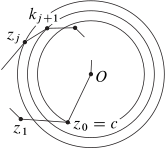

Geometría analítica
2020-02-17
Capítulo 1 Prerequisitos
1.1 Ingresar imagen
Generar pdf y svg en inskape(ajustar Shift+Ctrl+R) o relativos luego se debe guardar en el mismo directorio general luego se usa el entorno ff fff
\[\prod_1^2\]
### Vector
\[\vec{w}\]
1.1.1 Recta
See Theorem 1.1

Figura 1.1: ww
Here is my theorem. Here is my theorem.
Teorema 1.1 Here is my theorem. Here is my theorem.
Here is my theorem.
Here is my theorem.
Here is my theorem.
Here is my theorem.
Here is my theorem.
sea Here is my theorem. Here is my theorem. Here is my theorem. Here is my theorem. Here is my theorem.
Definición 1.1 (ww) Sea la siguiente formula Here is my theorem.
Here is my theorem.
Here is my theorem.
Here is my theorem.
Here is my theorem.

Figura 1.2: ww
Here is my theorem. Here is my theorem. Here is my theorem.